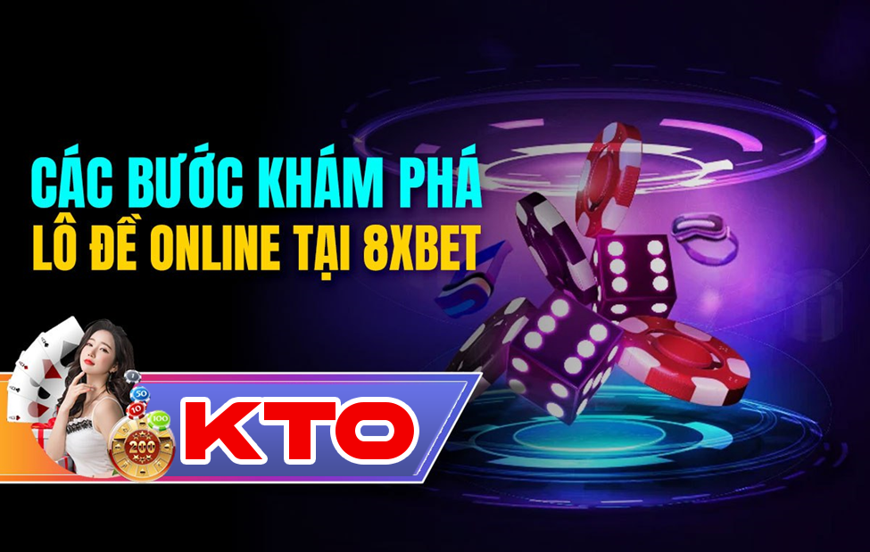

KTO Online – Chiến Lược Cá Cược E-Sports Tại KTO
Trong thế giới cá cược trực tuyến, KTO online đã nổi tiếng với việc cung cấp nhiều cơ hội thú vị cho người chơi, đặc biệt là trong lĩnh vực cá cược e-sports. Với sự bùng nổ của ngành công nghiệp e-sports, việc hiểu và áp dụng các chiến lược cá cược hiệu quả là chìa khóa để đạt được thành công. Trong bài viết này, chúng ta sẽ khám phá cách thức thống lĩnh các chiến lược cá cược e-sports tại KTO
Nắm bắt thông tin và phân tích:
Trước khi đặt cược, việc nắm bắt thông tin và phân tích là rất quan trọng. Theo dõi các tin tức về các đội e-sports, hiểu về phong cách chơi của họ và hiệu suất gần đây có thể giúp bạn đưa ra quyết định cá cược chính xác trên KTO online.
Hiểu biết về các trò chơi e-sports:
Mỗi trò chơi e-sports có đặc điểm và cách chơi riêng biệt. Việc hiểu biết sâu sắc về các trò chơi như Dota 2, League of Legends, Counter-Strike: Global Offensive (CS:GO), hay Overwatch sẽ giúp bạn đưa ra những dự đoán chính xác hơn khi cá cược trên KTO trực tuyến.
Quản lý vốn thông minh:
Quản lý vốn là yếu tố then chốt trong mọi chiến lược cá cược. Hãy xác định một ngân sách nhất định cho việc cá cược e-sports trên KTO online và tuân thủ nó một cách nghiêm ngặt để tránh rủi ro quá mức.
Sử dụng các tính năng và công cụ của KTO online:
KTO online cung cấp nhiều tính năng và công cụ hữu ích để hỗ trợ người chơi trong quá trình cá cược e-sports. Từ thống kê chi tiết đến các tài liệu hướng dẫn, hãy tận dụng mọi điều kiện để tối ưu hóa kết quả của bạn.
Luôn cập nhật và điều chỉnh chiến lược:
Ngành công nghiệp e-sports luôn thay đổi và phát triển. Hãy luôn cập nhật thông tin và điều chỉnh chiến lược cá cược của bạn theo những xu hướng mới để duy trì sự thành công trên KTO online.
Tham gia cộng đồng và trao đổi kinh nghiệm:
Tham gia các diễn đàn, nhóm trò chuyện hoặc cộng đồng e-sports trực tuyến có thể giúp bạn kết nối với những người chơi khác và chia sẻ kinh nghiệm, chiến thuật, và dự đoán. Việc trao đổi thông tin và ý kiến sẽ giúp bạn mở rộng kiến thức và nâng cao kỹ năng cá cược KTO của mình trên KTO online.
Thực hành và kiểm tra chiến lược:
Không có gì quan trọng hơn việc thực hành và kiểm tra chiến lược cá cược của bạn trước khi đặt cược với số tiền lớn. Bạn có thể sử dụng các trò chơi thử nghiệm hoặc cược với số tiền nhỏ trên KTO online để kiểm tra hiệu quả của chiến lược của mình trước khi áp dụng vào các trận đấu thực tế.
Tìm kiếm các nguồn thông tin uy tín:
Để đảm bảo rằng bạn có được thông tin chính xác và đáng tin cậy, hãy tìm kiếm các nguồn thông tin uy tín như trang web chính thức của các giải đấu, các nhà phân tích chuyên nghiệp, và các trang web tin tức e-sports. Việc có được thông tin đúng đắn sẽ giúp bạn đưa ra các quyết định cá cược sáng suốt trên KTO trực tuyến.
Điều chỉnh chiến lược theo kinh nghiệm:
Dựa vào kinh nghiệm và kết quả cá cược trước đó, hãy luôn sẵn lòng điều chỉnh và cải thiện chiến lược của mình. Việc học từ những sai lầm và thành công trong quá khứ sẽ giúp bạn trở nên tự tin và hiệu quả hơn khi cá cược e-sports trên KTO online.
Với những chiến lược cá cược e-sports thông minh và hiệu quả, bạn có thể tận hưởng niềm vui của việc tham gia vào các trận đấu hấp dẫn và cơ hội giành chiến thắng lớn trên KTO online. Hãy bắt đầu hành trình của bạn ngay hôm nay và trở thành một chuyên gia cá cược e-sports tại KTO!

Cách Chơi Trò Chơi E-Sports và Đặt Cược Thông Minh trên KTO Online
Để tham gia vào việc chơi các trò chơi e-sports trên KTO trực tuyến, bạn có thể tuân theo các bước sau:
Đăng nhập vào tài khoản KTO online:
Trước tiên, hãy đăng nhập vào tài khoản cá cược của bạn trên trang web hoặc ứng dụng di động của KTO.
Chọn mục e-sports:
Sau khi đăng nhập, điều hướng đến mục e-sports trên trang web hoặc ứng dụng KTO. Ở đây, bạn sẽ tìm thấy một loạt các trò chơi e-sports phổ biến như Dota 2, League of Legends, CS:GO, và nhiều trò chơi khác.
Chọn trận đấu và loại cược:
Tiếp theo, chọn trận đấu mà bạn muốn đặt cược. Sau đó, chọn loại cược mà bạn muốn tham gia, bao gồm cược trước trận đấu, cược trực tiếp, tỷ số chính xác, và nhiều loại cược khác.
Đặt cược và theo dõi kết quả:
Sau khi chọn loại cược và số tiền muốn đặt, bạn chỉ cần xác nhận cược của mình và chờ đợi kết quả. Bạn có thể theo dõi trận đấu trực tiếp trên KTO trực tuyến để xem kết quả và tình hình thay đổi của trận đấu.
Thu thập phần thưởng:
Nếu cược của bạn đúng, bạn sẽ nhận được phần thưởng tương ứng dựa trên tỷ lệ cược và số tiền đặt cược của bạn. Số tiền thắng sẽ tự động được cộng vào tài khoản của bạn trên KTO online.
Với các bước đơn giản này, bạn có thể tham gia vào việc chơi các trò chơi e-sports thú vị và đặt cược thông minh trên KTO online. Hãy bắt đầu ngay hôm nay và trải nghiệm niềm vui của việc tham gia vào thế giới e-sports cá cược trực tuyến!
Mẹo để Chiến Thắng tại KTO Trực Tuyến
Hiểu rõ các luật chơi và cơ chế hoạt động của trò chơi e-sports trước khi bắt đầu cá cược trên KTO online.
Theo dõi các giải đấu e-sports và phân tích thông tin về đội tuyển, địa điểm, và các yếu tố ảnh hưởng để đưa ra dự đoán chính xác.
Sử dụng các tính năng và công cụ phân tích của KTO trực tuyến để đưa ra quyết định cá cược thông minh.
Quản lý vốn một cách cẩn thận và chỉ đặt cược với số tiền mà bạn có thể tự chịu đựng mất.
Theo dõi kết quả và điều chỉnh chiến lược của bạn dựa trên kinh nghiệm và thông tin mới nhất từ KTO online.
Kết Luận:
Trong bài viết này, chúng ta đã khám phá những chiến lược cần thiết để tham gia cá cược e-sports tại KTO Việc hiểu rõ về các trò chơi e-sports, nắm bắt thông tin và áp dụng các chiến lược thông minh là quan trọng để đạt được thành công trong cá cược. Với KTO online, bạn có một môi trường an toàn và thú vị để tham gia vào thế giới của e-sports và trải nghiệm niềm vui của việc đặt cược. Hãy bắt đầu hành trình của bạn ngay hôm nay và khám phá sức hút của e-sports cùng với KTO trực tuyến!